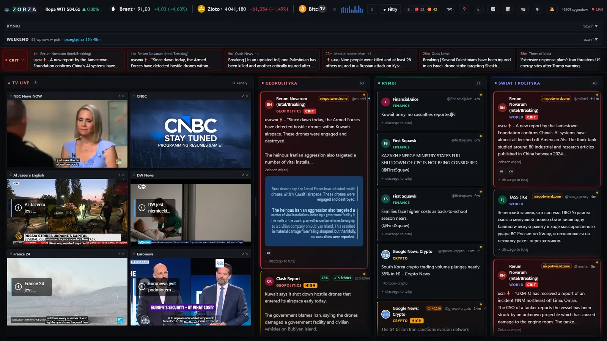

Zorza
Nasłuch informacyjny w czasie rzeczywistym
Agregator, który zbiera w jeden pulpit to, co dzieje się na kanałach Telegrama, w RSS, na X i w sensorach satelitarno-rynkowych. Zamiast kilkunastu otwartych kart — kolumny posortowane po wadze zdarzenia.
Każdy wpis dostaje ocenę wiarygodności razem z listą reguł, które ją ustaliły, a przedruk zwija się w licznik przy oryginale. Wpisy krytyczne trafiają push-em na telefon (ntfy), najwyżej sześć na kwadrans.
kod~23k
testy264
archiwum58 134 wpisy
RAM669 MB z 7,9 GB
- Kolektory: Telegram przez MTProto (41 kanałów), 59 kanałów RSS i ~15 API sensorycznych — NASA FIRMS, AIS, ADS-B, GDELT, COT, Polymarket
- SQLite z FTS5 (7 tabel) przy retencji 30 dni, jeden strumień SSE do przeglądarki
- Najpierw decydują reguły — Claude Haiku 4.5 wchodzi tylko tam, gdzie reguły nie rozstrzygnęły; embeddingi liczone lokalnie (all-MiniLM-L6-v2, 22 MB, offline)
- Self-hosted na Raspberry Pi 5 w utwardzonej piaskownicy systemd, CI z typecheckiem i testami
- Koszt nasłuchu 2,06 USD na dobę, zmierzony przez 7,8 h pracy (z tego 2,00 USD to klasyfikacja) — terminal Bloomberga kosztuje 31 980 USD rocznie
- Próg deduplikacji wyprowadzony z pomiaru, nie z wyczucia: dosłowny przedruk to 0,83 Jaccarda, parafraza 0,39 — cięcie na 0,70
- FLOOD_WAIT Telegrama na 8 godzin po serii restartów: cache pary (channel_id, access_hash) zamiast rozwiązywania nazw — zero wywołań resolve przy starcie
- Bramka batchowania LLM: zmierzone 51 wywołań/h po ~2 wpisy (2,00 USD na dobę) → paczka czeka do pełna albo 5 min; prognoza ~12 wywołań/h i 0,78 USD